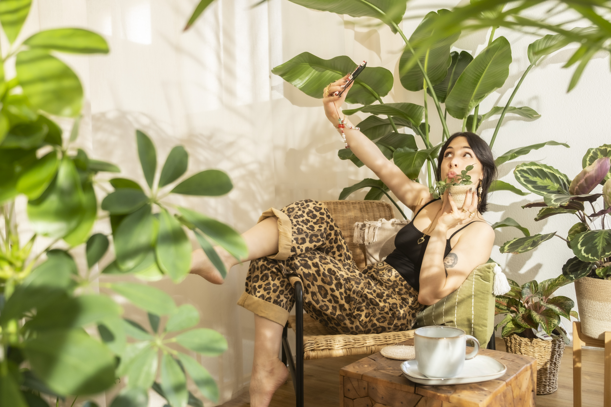
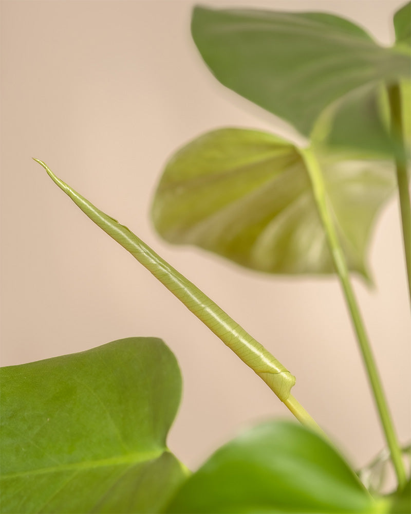
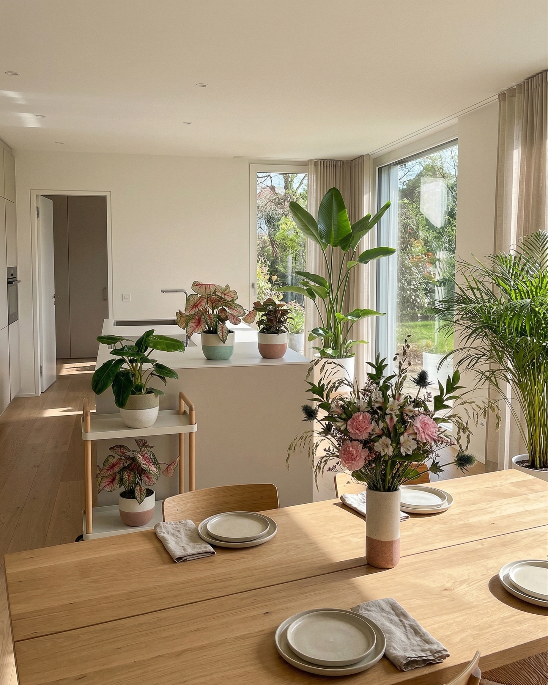

Foto 1
Lifestyle — Du mit deiner Pflanze
Du hältst oder interagierst mit der Pflanze im feey Topf. Torso und Hände im Bild, Gesicht optional. Die Pflanze ist der Star, aber deine Hände geben ihr Leben. Wie die feey «Action Shots» — die Pflanze wird von echten Händen gehalten.
Spezifikationen
- Natürliches Tageslicht, weich und warm
- Hintergrund: warmes Beige, weisse Wand oder dein echtes Zuhause
- feey Topf muss sichtbar und erkennbar sein
- Format: 4:5 oder 9:16
- Kein Makeup nötig, natürlicher Look
Ideen & Inspiration
- Du hältst die Pflanze auf Brusthöhe, Blick nach unten auf die Pflanze
- Du stellst die Pflanze auf ein Regal und rückst sie zurecht
- Du hebst die Pflanze aus der feey Verpackung — der «frisch angekommen»-Moment
- Nahaufnahme deiner Hände, die den feey Topf umfassen

.jpeg)
.jpeg)

.jpeg)
.jpeg)


Bildquelle: Pinterest / Instagram
Confidential
Foto 2
Detail — Pflanze im Fokus
Nahaufnahme der Pflanze selbst: Blattstruktur, Muster, Farben, Texturen. Die botanische Schönheit im Zentrum. Zeig, warum diese Pflanze besonders ist — als wäre es ein Kunstwerk der Natur.
Spezifikationen
- Natürliches Licht, weicher Fokus im Hintergrund
- Pflanze im feey Topf, clean aufgestellt
- Format: 4:5 oder 9:16
- Scharfes Detail auf Blättern/Struktur
Ideen & Inspiration
- Macro-Shot eines Blatts mit sichtbarer Textur und Adern
- Pflanze von oben fotografiert — Top-Down auf die Blätter
- Pflanze auf dem Fensterbrett mit Lichtspiel durch die Blätter
- Neue Triebe oder Knospen als Symbol für Wachstum
%20details3.jpg)

.jpeg)

Bildquelle: feey / Pinterest
Confidential
Foto 3
Interior — Pflanze in deinem Zuhause
Die Pflanze in deinem echten Wohnraum, ohne Person im Bild. Das Licht ist der Hero. Warme Schatten an der Wand. Die Szene fühlt sich an, als wäre gerade jemand aus dem Bild getreten. Genau der feey «Interior/Lifestyle»-Modus.
Spezifikationen
- Golden Hour oder helles Morgenlicht
- Pflanze im feey Topf, prominent platziert
- Format: 4:5 oder 9:16
- Umgebung: Wohnzimmer, Essbereich oder Schlafzimmer
Ideen & Inspiration
- Pflanze auf einem Holztisch neben einem aufgeschlagenen Buch und Kaffee
- Pflanze auf einem Regal zwischen persönlichen Gegenständen
- Pflanze auf dem Fensterbrett — Sonnenlicht streift durch die Blätter
- Mehrere feey Pflanzen zusammen arrangiert — ein kleiner «Urban Jungle»-Moment
.jpeg)
.jpeg)
.jpeg)
.jpeg)


Bildquelle: Pinterest / Instagram
Confidential